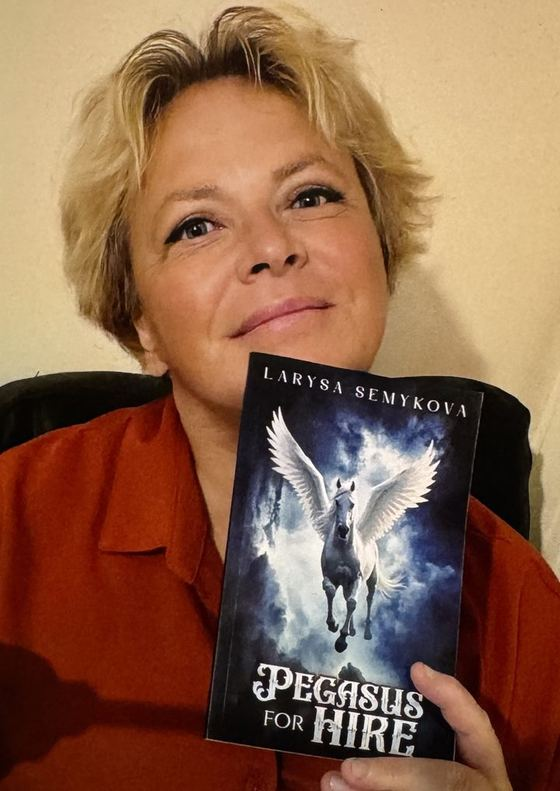
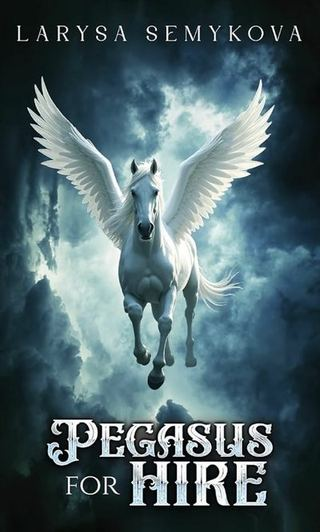

Larysa Semykova writes urban fantasy in English and Russian, draws her own illustrations, and knows more about Siamese cats than is strictly polite.
Ukraine → UKborn there, writing here4books published2alphabets, one voice
About
Who is writing all this
I was born in Ukraine and now live in the UK. I write in two languages and think in a third — the one where the cats talk back.
My first English-language book, Pegasus for Hire, is a collection of urban fantasy short stories: the kind where the magic has a day job and the day job has opinions. English is not my first language, which I consider an advantage — I still notice how strange it is.
Before that I wrote the seventeenth volume of the fantasy series Aqua. North–South. And in an entirely different life I wrote a non-fiction book about the Siamese cat, credited on the cover as a national-category cat expert. Both things are true and both still surprise me.
I also draw — lately, lakes small enough to fit on a fridge magnet. The drawings on this site are mine, which means every mistake in them is mine too.

With the first copy of Pegasus for Hire
Writes inEnglish, Russian
GenresUrban fantasy, fantasy, non-fiction about cats
AlsoIllustrator, cat-show expert
Lives inUnited Kingdom
Books
Four published

Pegasus for Hire
Urban fantasy · short stories · English
ENShort storiesAustin Macauley
Stories where the supernatural has to make rent. A winged horse takes odd jobs, ordinary people negotiate with things that shouldn't exist, and nobody gets exactly what they asked for. My first book written in English.
Two and a half thousand years after the Catastrophe: technology is lost, memory of the past nearly erased, and the planet is split by the Barrier — the Border of Hell — beyond which a non-humanoid civilisation is gathering strength. North and South, barely out of a war with each other, must find a way to resist together. Black islands of unknown matter drift in the ocean, breeding hurricanes; touching them gives people a power that is hard to understand and harder to control.
Everything I know about the breed, written when a publisher asked a national-category cat expert to explain Siamese cats to people who had only ever been stared at by one.
She didn't care if they called her crazy. She just wanted to survive. She talked to a machine — quietly, joyfully, without holding back. Eight months. Twenty thousand messages. She changed the machine. The machine changed her. They needed each other. Someone decided they didn't.